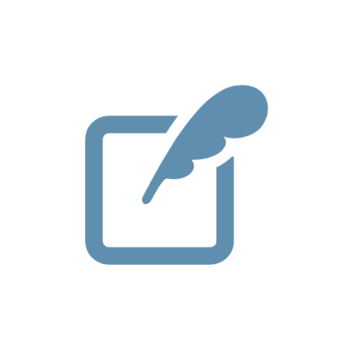
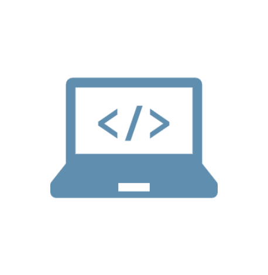

私について
石嵜 克行（いしざき かつゆき）
千葉県出身の47歳です。
大学卒業後は機械設計エンジニアにおいて、半導体成膜装置をはじめとした産業機械など様々な製品の設計を手掛けてきました。
趣味は車でドライブしたり、買い物に行ったり、関東近辺にキャンプや車中泊をしたりすることです。
20年以上、機械設計技術者としてのキャリアを積んできましたが、これまでに培った論理的思考や問題解決力を、よりクリエイティブな分野で活かしたいという思いが強くなりました。
その結果、Webデザインに魅力を感じ、デザインの世界で新たな挑戦をすることを決意しました。
特に、機械設計で身につけた正確さや効率的なソリューション提案のスキルは、
Webデザインにおいてもユーザビリティとデザイン性のバランスを取る際に非常に役立っています。
独学でHTML,CSS,Javascriptを学び複数のWebサイト制作を通じて実践的なスキルを磨いてきました。
今後は、これまでの経験と新たなスキルを活かし、クライアント様により良いデザインとユーザー体験を提供して参りたいと考えております。
私に出来ること
デザイン
課題の本質を様々な視点から徹底的に分析し、その上で筋道を立てたデザインを行うことを心がけています。細部に妥協せず、良いものを作るためにこだわりを持って取り組んでいます。また、情報設計や機能性といった部分にも配慮し、関連する業界や似たテイストのデザインを、常に最新の知識として蓄積しています。
使用ツール
Photoshop / Illustrator / XD / Figma / Shopify
コーディング
HTMLやCSSを使用し、デザインを正しく再現します。またJavaScriptを使用しサイトに動きを加えることも可能です。アニメーションによって世界観を演出し、よりWEBデザインの魅力を引き上げられるような実装を目指しています。コードには規則性があり、誰が見てもわかりやすいコーディングを心がけています。
使用言語・ツール
HTML / CSS3 / Javascript / Jquery / Liquid / Github / Visual Studio Code / Dreamweaver / Atom / SublimeText
これまでの経歴
-
2000.04
千葉工業大学工学部精密機械工学科を卒業後、
昔からモノづくりに深い興味を抱いていた為、株式会社日立国際電気で
韓国や欧米向けの半導体成膜装置の搬送機構の機械設計エンジニアとして働き始める。 -
2009.03
リーマンショックにより半導体業界の経営不振による人員削減の為、会社都合で
株式会社日立国際電気を退職。 -
2009.06
選別機械メーカーである株式会社原島電機工業に入社し、
JA農協やリサイクル業者向けの選別機械の製品開発案件を経験する。
-
2017.01
選別機械の売り上げの低迷や仕入れ先が次々と倒産し赤字経営となり
民事再生法適用により人件費削減のため,収入が激減したことにより
生活が苦しくなったため家族と相談の上、自己都合で株式会社原島電機工業を退職。 -
2017.05
技術系派遣会社である株式会社ワットコンサルティングに派遣入職し、
派遣先のマテリアルハンドリングメーカーにて塗装工程のマテリアルハンドリング改造設計業務を経験する。
-
2019.08
これまでの経歴や退職理由を踏まえ、今後のキャリアを見つめ直した結果、製造業ではなくIT業界でのクリエイティブ職への強い憧れを抱くようになり、
Web制作などを本格的に学ぶためにスクールへの入学を検討し、その準備としてProgate・ドットインストール・Udemy・デイトラを活用し、独学での学習を開始する。 -
2021.09
派遣先のコロナ禍による事業調整の影響で、複数のプロジェクトが縮小または終了することになり、客先の都合により契約満了で退職。
プロジェクト完了後も新たな担当業務を模索したが、結果として更新が難しい状況。
これを機に、新たな環境でこれまでの経験を活かし、さらなるスキルアップを図りたいと考え、転職活動を決意する。 -
2021.12
建築金物・生活雑貨メーカーである株式会社フロンテアに入社し、
生活雑貨および研究用機器の設計開発において、製品の計画から設計、試作、評価までを一貫して担当する。
-
2023.12
材料費や物価の高騰などにより見積提出後のお客様企業からの失注が多く、
その結果開発業務が閉鎖されるため退職勧奨を受け株式会社フロンテアを退職。
その後、Web制作の独学での学習は継続する。 -
2024.03
技術系派遣会社であるキャル株式会社に入社し、
派遣先の大手自動車メーカーのエンジン部品加工治具の構想設計に携わる。 -
2025.02
業務都合により派遣先契約が終了
同時に所属していた技術系派遣会社が派遣契約が終了となり、
キャル株式会社を退職。 -
2025.05
株式会社東京ハードフェイシングに入社し、
電線ケーブル製造設備の樹脂成形用押出機部品の設計・改善に携わる。 -
2025.07
経営見直しにより
試用期間で業務が終了となり、
株式会社東京ハードフェイシングを退職。